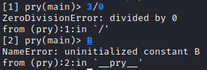
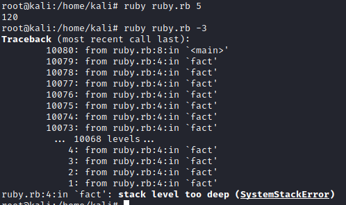

Exceptions
When an error occur, Ruby raises an exception. Normally when an exception is raised, the program terminates its execution.
Ruby, like almost all OO languages, allows us to handle the error and execute some arbitrary code
Exception in Ruby are object instances of the Exception class (or one of its subclasses)
rescueIf we want to handle an exception and execute some arbitrary code when it happens, you can use rescue.
def fact(n)
return 1 if n==0
return 1 if n==1
n*fact(n-1)
end
begin
a=fact(ARGV[0].to_i)
p a
rescue
p $!.message
end
p() is a Kernel method. It writes obj.inspect to the standard output.
In Ruby, $! refers the last Exception object.
retryRetry is a clause that can be used inside a rescue clause to re-execute the block of code that has caused the exception
Attention: with retry, you might introduce an infinite loop of retry block execution.
example:When b is 0, a ZeroDivisionError occurs. Rescue captures it, changes b to 1 and then retry the begin block.
a=ARGV[0].to_i
b=ARGV[1].to_i
begin
print "#{a} / #{b} = "
print a/b, "\n"
rescue
print "Error\n"
b=1
retry
end